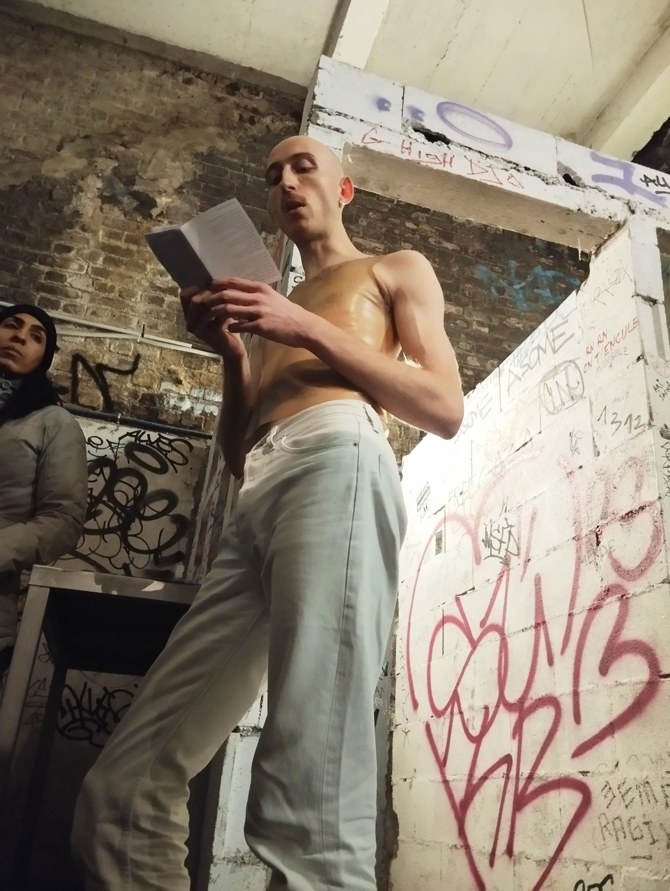
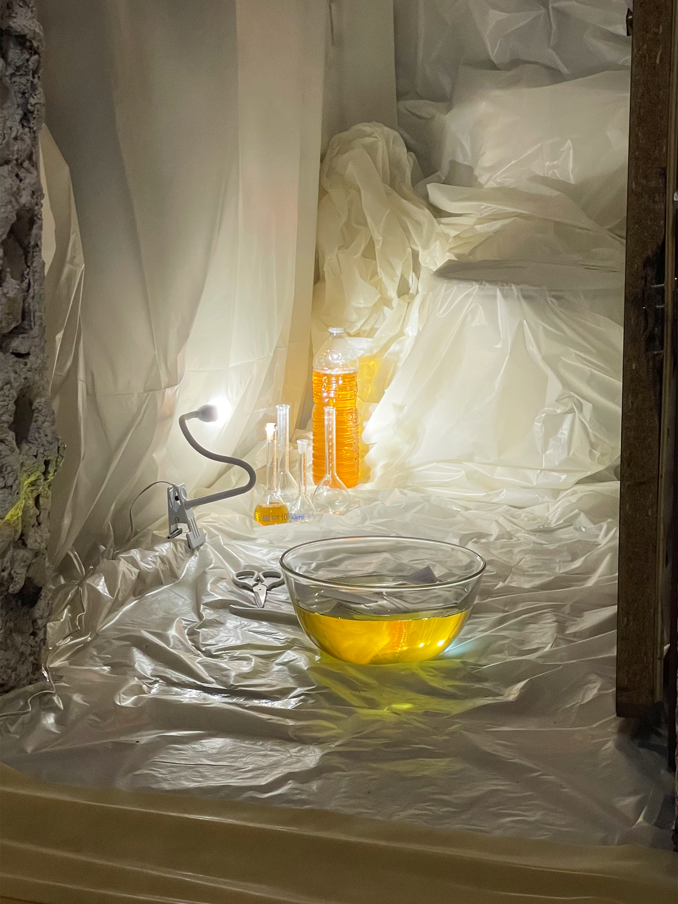
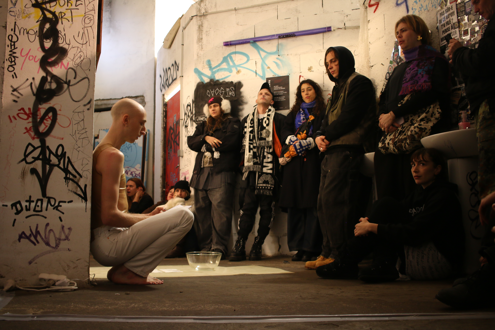
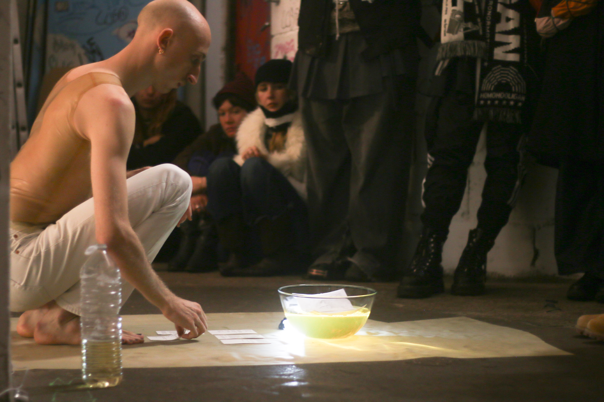
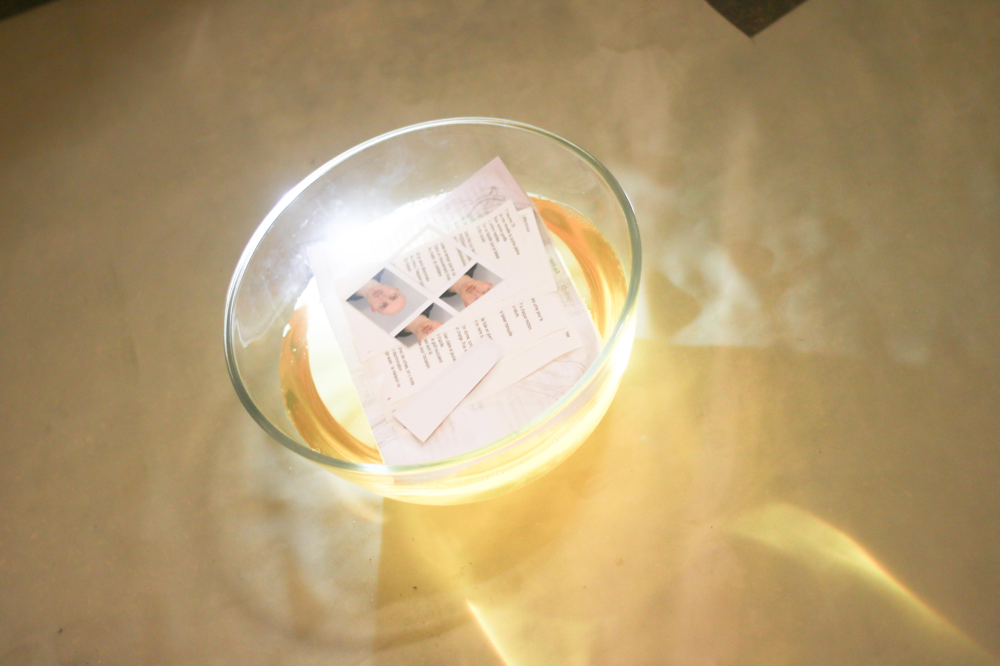
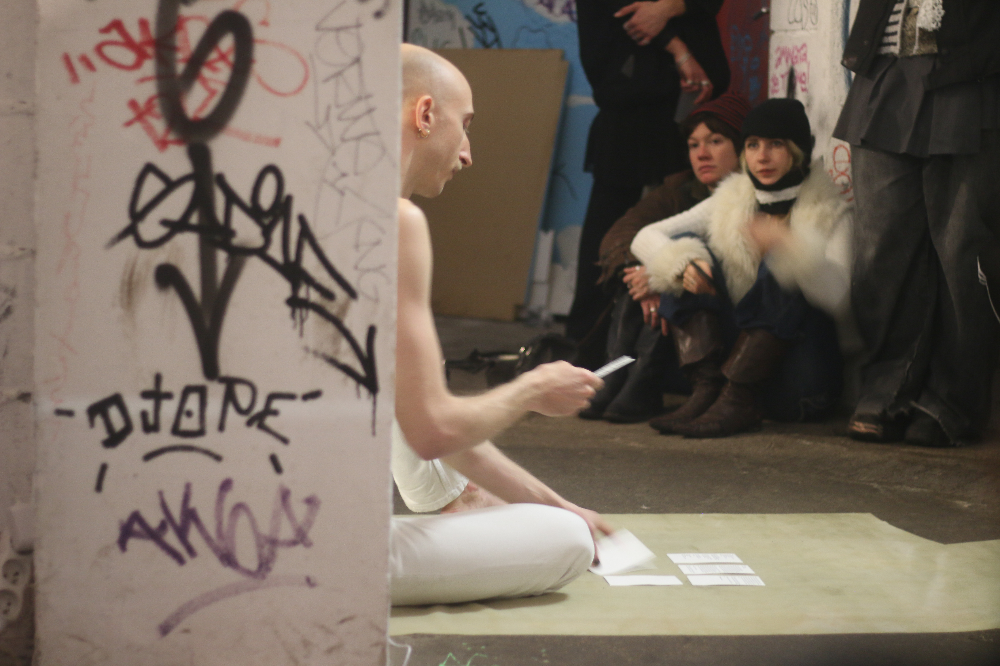
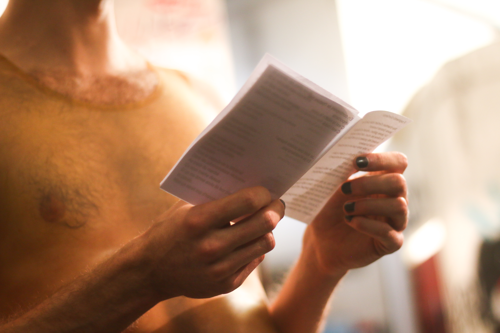

Dissoudre haillons urine
Second part of the eponymous project, with a few letters (dissolved), Dissoudre haillons urine (Dissolving Rags Urine) is both a performance and an installation created in December 2025 in a toilet stall and its surrounding sanitary space. In the writing, childhood memories are woven with recent ones, ranging from nostalgia to love, joy, and rebellion. Final act: my fragmented identity is immersed in urine and joins the printed texts. Gradually, following the performance and throughout the installation, everything dissolves in the golden bath.
This work was created for "Liquides précieux" (Precious Liquids) event organized by the Very Important History collective at Le Sample (Bagnolet, FR) in December 2025.
Latex top by Salem Lasselin
Pictures by Louise Destable, Max Utech et Victor Abraham Lacô.







